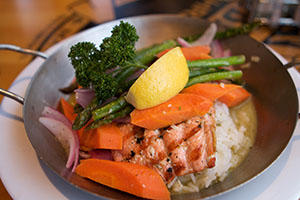

San Francisco Restaurants
San Francisco has many great places to eat, with a variety of foods from sea food, to Italian, to Chinese, American and more.
My favorite location is the crab house on Pier 39. The dungenous crab there is wonderful and I will eat there at least once each time I visit the city.
The Crab House on Pier 39
The Crab House at Pier 39 serves a variety of foods at reasonable rates. I usually will order from the Prix Fixe Menu which gives you a Salad in a garlic vinaigrette dressing, Killer Crab (1 lb.) and Tiramisu Dessert for just $29.95. The picture to the left is one such meal, and I love the garlic and seasoning they use to make their crabs.
The windows are usually open during the time I visit in June so you get a nice breeze and can look out into the bay while eating.
The restaurant is clean, the wait staff is friendly, and seating times are always reasonable for when I have visited in the past. They even offer their menus in a number of different languages to accommodate the vast amount of visitors that come to San Francisco from around the world. I would highly recommend a visit to the Crab House the next time you are in San Francisco. You will not be disappointed.
Bubba Gump Shrimp Co.
Bubba Gump Shrimp Co. is located on Pier 39 and I find it a nice place to stop for lunch. It is a chain restaurant that you can find it many states, there food is good and reasonably priced. I like to get the Salmon and Veggie Skillet which is grilled and has fresh vegetables with a bit of garlic herb butter and capers, served over Jasmine rice. For drink I like to have an Anchor Steam, brewed in San Francisco.
The wait staff is friendly and responsive and if you need anything all you need to do is flip the sign on the top from Run Forest to Stop Forest. Your server will stop by during your meal and ask you Forest Gump trivia, many of them are trick questions, so think before you give your answer.
There is a nice gift shop next to the restaurant as well with a variety of Forest Gump shirts, cups, and other materials. The restaurant has a nice ambiance and is fun to be in. I usually have a lunch here while visiting San Francisco and save dinner for Italian or Seafood.
Franchino
Franchino is a great restaurant that I was told about by my friend Jeff who use to live in San Francisco. Franchino serves great Italian food, in a cozy environment. The owner is very friendly and you feel like you are part of the family while eating there.
The staff is great at Franchino's and the food is wonderful. I plan on eating there a number of times each time I visit the city. The restaurant is located at 347 Columbus Ave and is walking distance from the Holiday Inn on Columbus Ave. It is a long walk, but you will enjoy looking around on this nice walk.
This is one restaurant that I would recommend you stop by.